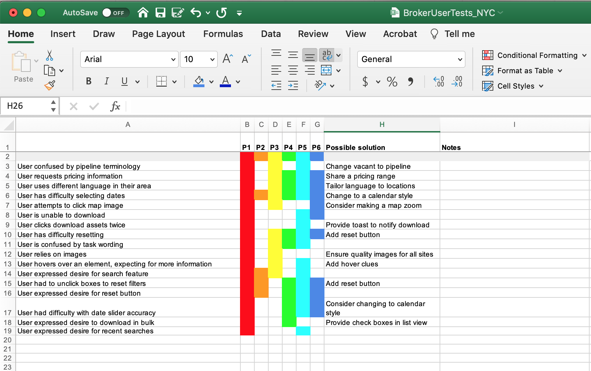

Below are some examples of how the different methodologies break down
ranging from attitudinal (testing users' perceptions) to behavioral
(understanding users' actions) and from what they seek to understand
from "What a user is doing" and "Why they are doing it"
Methods
Semi-Structured Interviews
Qualitative, Attitudinal
Direct contact with participants one-on-one to collect
firsthand personal accounts of experience, opinions,
attitudes, and perceptions
Ethnography
Qualitative, Behavioral
Attentive observation of people, artifacts, environments,
events, behaviors, and interactions
Contextual Inquiry
Qualitative, Behavioral
An immersive, contextual method of observing and
interviewing that reveals underlying (and invisible) work
structure
Diary Studies
Qualitative, Attitudinal
Guiding artifacts and activities that allow users to provide
snapshots into their daily lives and events
Competitive Analysis
Quantitative, Behavioral
Testing the usability, learnability, and desirability of
competitors' products as benchmarks
Card Sorting
Quantitative, Attitudinal
Asking users to sort components into different buckets based
on their comprehension and expected categorization
Co-Design Sessions
Qualitative, Attitudinal
A human-centered approach incorporating active user and
stakeholder engagement in participatory design exercises
Focus Groups
Qualitative, Attitudinal
Convening multiple users to provide insight into themes,
patterns, and trends experienced collectively by groups
Speed Dating
Quantitative, Attitudinal
Comparing multiple design concepts in quick succession to
learn how people react while also validating user needs
Think Aloud Protocol
Qualitative, Behavioral
A method where participants verbalize what they are doing
and thinking while completing a task, revealing interface
aspects that delight, confuse, and frustrate
Usability Testing
Qualitative, Behavioral
Focuses on people and their tasks and seeks empirical
evidence about how to improve the usability of an interface
Heuristic Analysis
Quantitative, Behavioral
Analyzing interfaces with respect to a set of usability best
practices to detect usability problems before actual users
engage with the interface
A/B Testing
Quantitative, Behavioral
Comparing two versions of the same design to see which
performs statistically better against a predetermined goal
Web Analytics
Quantitative, Behavioral
Measurement, collection, analysis, and reporting of internet
data to understand and optimize usage and usability
Survey
Quantitative, Attitudinal
Collecting self-reported information from people about their
characteristics, thoughts, feelings, perceptions, behaviors,
and attitudes
Semi-Structured Interviews
Direct contact with participants one-on-one to collect
firsthand personal accounts of experience, opinions,
attitudes, and perceptions
An 1:1 interview session. Source:
https://www.testingtime.com/en/blog/questions-in-user-interviews/
Interviews are most suitable for exploratory research at the
beginning of a research project where the problem space needs
to be further defined. Because of the self-report bias that
comes with interviews, it is best when this method can be
triangulated with other methods that offer more insight into
user behaviors. Interviews can be either structured with a set
list of questions or unstructured, where the interviewer comes
with a list of themes or topics to guide the conversation, but
leaves room for deeper probing.
Steps for Conducting Interviews:
Define your general research question and problem
space.
Identify who would be best to interview. Are these stakeholder interviews? User interviews? Are
there subsets of users? Aim for 4-8 interviewees within each
subset or category that you identify.
Develop an interview guide.For semi-structured interviews, begin by outlining topics
or themes you want to explore with the participant. Once
you’ve narrowed down 3-4 themes, draft 3-6 questions for
each theme. Don’t forget to add introduction and conclusion
sections to your interview guide where you give an overview
of the project, ask for consent, and wrap-up the
conversation.
Conduct the interviews.Come
with your interview guide handy and a system for taking
notes. Use a software that will record audio and/or video of
the conversation (after receiving participant consent to be
recorded). It is best to conduct interviews with a teammate
where one person can moderate and the other can capture
notes.
Debrief the interview. Take
15-20 minutes after the interview to debrief with your
teammate top takeaways and key findings from the interview
while it’s fresh in your minds.
Ethnography
Attentive observation of people, artifacts, environments,
events, behaviors, and interactions
Artifacts of ethnographic analysis.
Ethnography involves semi-structured observation in the
exploratory phase of the design process. Observing users in
their natural environments is ideal to get an honest
understanding of users’ behaviors. Generally, ethnographic
methods enable researchers to observe with an open mind, but
they may come with certain items they are looking for to
structure the process to codify certain behaviors.
Steps for Conducting Ethnography:
Identify the problem space you’re working in and your
research question.
Identify where the activities you’re interested in
studying naturally take place. (i.e. If you’re interested in people’s grocery shopping
behaviors, conduct ethnography at a grocery store.)
Find a location and time that will be ideal for your
observation.Consider when the place is likely to be more or less
populated depending on your research question.
Develop an observation guide.
Consider what types of activities or areas of the
environment you’re hoping to observe. Are there certain
behaviors you can codify and look out for?
Gather the necessary equipment. Bring your observation guide, a camera to document your
observations, and a way to take notes about what you are
observing.
Go to the location and conduct observations. Spend a few hours observing user behavior in this space and
documenting what you see. Pay attention to cues beyond
visual ones such as what you’re hearing or smelling.
Debrief the observation session After completing an observation session, debrief top
takeaways with your team.
Contextual Inquiry
An immersive, contextual method of observing and interviewing
that reveals underlying (and invisible) work structure
An example of conducting a contextual inquiry. Source:UX
Collective article by Leonel Foggia
Contextual inquiry is an immersive method, which allows the
researcher to probe while also observing the participant in
the context in which they typically perform the activity they
want to study. Unlike a typical interview where the
interviewer is moderating, contextual inquiry adopts a
master/apprentice model where the interviewee is the master
and the interviewer is the apprentice. This enables the
interviewer to truly be immersed in the user’s daily routine,
learning from the “master” about how they do things while
observing and asking probing questions.
Steps for Conducting Contextual Inquiry:
Define your research questions and problem space.
Identify and recruit users who fit the profile for users
you’re interested in studying within the problem
space.
Develop a guide for contextual inquiry.Consider when the place is likely to be more or less
populated depending on your research question.
Develop an observation guide.
Plan a clear introduction where you ask for the
participant’s consent and give an overview of your project.
Note any exploratory questions you are interested in asking
about. Include a conclusion to wrap-up the session.
Conduct the contextual inquiry. Go to the user’s environment, introduce yourself, and let
them carry out their typical activities while you observe
and ask questions at unobtrusive times. Record the session
with audio and/or visual recording devices. Note
observations and capture images of the user’s environment.
Interpret your notes. After
the contextual inquiries, conduct interpretation sessions
with your teammates where you share back your raw
observations. Use these interpretation notes for an affinity
diagramming exercise to identify key themes.
Diary Studies
Guiding artifacts and activities that allow users to provide
snapshots into their daily lives and events
An example of a digital diary prompt on dscout, a digital
diary platform. Source: dscout Help website.
Diary studies are beneficial for capturing information from
users across a longer period of time, sampling their thoughts,
feelings, and behaviors at key moments. Traditionally, diary
studies have involved sending participants diaries with
activities written in them for the participant to complete at
certain points throughout their days. Each page entry in the
diary is guided with a question or prompt, and creativity is
encouraged for participants to include images, drawing, or
text. A reflection space is also typically included.
With the rise of digital tools, many platforms now exist to
support conducting diary studies online. These enable the
researcher to set up activities for a user and release new
prompts each day or week for the duration of the study. Users
can record audio and video of certain moments, upload images,
and respond to tasks. Some of these platforms include
dscout,
Recollective, and
Lookback.
Steps for Conducting Diary Studies:
Define your research question and what you hope to
learn.
Identify and recruit users who fit the profiles you hope
to study. The amount of users you recruit will depend on your
research question, time, and budget. However, diary studies
can be expensive due to their length and can potentially
result in attrition over time. Consider these aspects when
deciding how many users to recruit.
Develop the diary. Either on
a digital platform or with a paper diary, break the time
frame of the study down to determine what topics you want to
focus on at which point during the study. Also determine
when you want participants to complete the diary. Daily?
Weekly? Retrospectively at the end of each day? Each time
they complete said activity?
Create the activities.
When you’ve decided when you want participants to complete
the diary each day and which topics you want to explore at
which parts of the duration of the study, craft activities
related to each topic. For each entry, make sure to start
with a guide or prompt for the user and balance how
time-intensive tasks are for each day. Include any
clarifying or probing questions as needed.
Deploy your diary study. Either send the paper diaries or the link to the digital
diary to participants. Be on hand to answer any questions as
participants get onboarded. Set the time frame for when
activities will be released for digital studies.
Track responses. If using a
digital platform, track participant diary entries throughout
the study, so you can probe more deeply if you have a
question about a response.
Synthesize the data. At
checkpoints throughout your study and at the end, begin
sifting through the data to identify patterns, themes and
key takeaways.
Competitive Analysis
Testing the usability, learnability, and desirability of
competitors' products as benchmarks
An example of competitive analysis for the design of meal
delivery apps such as UberEats, DoorDash, Grubhub, and
Postmates. Source:
https://www.appsrhino.com/doordash-v-s-grubhub-v-s-ubereats-v-s-postmates/
Competitive analysis is an exploratory research method that
enables researchers to keep track of competition’s business
activity. When exploring a new problem space, research teams
can see what similar products or services currently exist. To
understand their strengths and weaknesses, researchers can
conduct usability tests or other research methods using
competitor tools to better gauge where their competition
stands.
Steps for Conducting Competitive Analysis:
Define your problem space.
Explore who else is offering similar products or
services. If possible, test out those products and services yourself,
noting key features, strengths, and weaknesses. Identify and
recruit users who fit the population your project caters to.
Conduct competitive testing. Schedule sessions with recruited users where you explore
competitor products. Potentially conduct a usability test on
competitor products, noting points of delight, confusion, or
frustration.
Debrief sessions.
After each competing testing session, debrief findings and
key takeaways with your teammates.
Synthesize information. Compile information gathered about competitors to help
inform your company’s competitive advantage and
differentiator, as well as areas of improvement to match
competition.
Card Sorting
Asking users to sort components into different buckets based
on their comprehension and expected categorization
The Optimal Workshop interface for digital card sorting.
Source:
https://signalinc.com/create-a-better-user-experience-with-card-sorting/
Card sorting is beneficial when trying to understand users’
comprehension and expected organization of content. While the
exact categories and format of card sorting may vary depending
on the research question, card sorting involves providing
users with many cards containing concepts, terms, or features
and asking them to sort them into categories. Card sorts can
either be structured, where the categories are predefined by
the researcher, or unstructured, where participants can label
categories for each grouping of cards as they see fit. This
method is often used when determining the navigation of a
website or application, the organization of content on a site,
or prioritizing hierarchy of features. Many digital tools now
enable card sorting such as
Optimal Workshop,
Recollective, and
User Zoom.
Steps for Conducting Card Sorting:
Define your problem space and research question.
Decide if you will do a digital or in-person card sort. Select a digital platform to use if you opt for a digital
card sort.
Identify and recruit users that fit the profile you’re
studying.
Develop cards and categories if conducting a structured
card sort.
List only one category, concept, term, or feature on each
card. Cards can include images, sketches, and text, but keep
the text pithy.
Conduct the card sorting sessions. Work iteratively with individual participants or small
groups of participants (no more than 3-5 people) according
to the book Universal Methods of Design. Conduct no more
than 15 card sorting sessions.
Prompt the users to sort the cards. Provide instructions for users to sort the cards and leave
them time to work through all the cards (~30-100). Ask them
to think aloud while sorting so you understand their thought
processes.
Include the option to add additional cards where needed.
Synthesize data. Notice
patterns in which categories participated sorted different
cards into. Online tools will create graphs and
visualizations of how participants categorized the cards.
Use this information to inform your experience design
project.
Co-Design Sessions
A human-centered approach incorporating active user and
stakeholder engagement in participatory design exercises
A co-design session where a group of users is drawing and
designing together. Source:
https://medium.com/@gyngyifekete/designing-a-co-design-workshop-7686eaf4bf0f
Co-design sessions bring users and stakeholders into the
design process as collaborators. Using interactive activities
such as cultural probes, diary studies, collages, and design
workshops, users can create design concepts alongside the
design team.
Steps for Conducting Co-Design Sessions:
Identify and recruit users who fit the profile you’re
studying.
Plan participatory design activities such as cultural
probes, collages, or design workshops. Prep any materials needed such as large papers, markers,
pre-cut collage items. Define instructions for the workshop.
Conduct co-design sessions. Invite a small group of participants to the session if
conducting a design workshop and provide the creative
toolkits. As they work through their designs, probe around
why they are designing things certain ways.
Collect the designs.
Bring back the materials from the co-design sessions and
identify similarities and differences across the examples
with your team. Use these insights to inform your design
process.
Focus Groups
Convening multiple users to provide insight into themes,
patterns, and trends experienced collectively by groups
An example of an interactive focus group. Source:
https://themeangel.com/wonderful-ways-to-conduct-ux-research-focus-group/
Focus groups are less commonly used as a user research method
as participants in focus groups can be susceptible to
groupthink, where they change their real views to match what
the rest of the crowd thinks or says. Focus groups are a
successful user research method for studying user experience
with activities typically performed or experienced in group
settings such as redesigning a workplace environment used by
many employees. This method can also be used by market
researchers to understand opinions or perceptions of a group
potentially about a brand or product.
Steps for Conducting Focus Groups:
Define your research question and what you hope to answer
through conducting a focus group.
Identify and recruit participants that fit in the problem
space you are studying.
Prepare a guide and materials for the focus groups.Identify 3-4 topics you want to discuss with participants
and 4-5 questions per each topic. Consider bringing in
interactive activities, such as voting where something fits
on a spectrum or on a mood board, postcards from the future
exercise where participants envision the future state of an
experience, or a homework exercise asking participants to
bring an image of an experience.
Conduct the focus groups.
At the set time, gather the participants in a room. Bring
equipment to record audio and video of the session as well
as all your materials and name cards for the participants.
It’s ideal to conduct the session with one moderator and a
teammate who can help pass out materials and take notes.
Synthesize data from the focus groups.
Watch through recordings and note key themes and takeaways
from the sessions.
Speed Dating
Comparing multiple design concepts in quick succession to
learn how people react while also validating user needs
Example materials from a speed dating session including a
cover page and two storyboards.
Taken from its real-life counterpart, speed dating is a method
where researchers rapidly test design opportunities with
potential users. Users are exposed in rapid succession to
potential design ideas in the form of storyboards or simulated
environments to validate the need that the proposed concepts
solve. This method is typically used after conducting other
contextual field methods and beginning to ideate around
potential design opportunities.
Steps for Conducting Speed Dating Sessions:
Ideate potential design opportunities as a team and vote
on the most successful ones.
Create storyboards for each scenario. Include humans in the storyboards and don’t focus on
technical features of the design. Scenarios should be
centered around solving specific user needs.
Create a cover page for each storyboard. Cover pages should be used by the researcher and not shown
to participants. The cover page serves as a guide to
summarize the user's needs and follow-up questions.
“Speed date” storyboards in a session.
Present each storyboard to an individual or small group in a
series fashion followed by focused follow-up questions. Ask
the users to rank how accurately the storyboards represent
their needs and the effectiveness of the proposed
opportunity.
Debrief the speed dating sessions.
Discuss findings and takeaways from the storyboard sessions.
Refocus needs as were validated by the sessions, refine
scenarios, and consider additional design opportunities.
Think Aloud Protocol
A method where participants verbalize what they are doing and
thinking while completing a task, revealing interface aspects
that delight, confuse, and frustrate
Example of a think aloud protocol outlining tasks for users
to complete.
Think aloud protocol is a technique that can be used in a
range of user research methods including usability testing,
contextual inquiries, and card sorting. The technique involves
asking users to think aloud as they complete a task or
activity whether that task was prompted by the moderator as in
a usability test or is one they are doing organically as in a
contextual inquiry.
Steps for Conducting a Think Aloud Study:
Identify and recruit users that fit your target
audience.
Develop a guide of tasks you want them to complete while
thinking aloud.
Ask the user to think aloud. Begin the session by prefacing that thinking aloud is
unfamiliar for most participants, but it will help you gain
insight into their thought processes and reactions. Don’t be
afraid to prompt users if they stop thinking aloud at any
point during the session.
Debrief the studies with your team.
Identify key themes and takeaways from the study.
Usability Testing
Focuses on people and their tasks and seeks empirical evidence
about how to improve the usability of an interface

A rainbow analysis spreadsheet used to track usability
issues. For more information on this method,
Click here.
A method which employs the think aloud protocol, usability
testing occurs later in the design process after a working
prototype has been developed. Usability testing sessions are
one-on-one engagements where participants are asking to use an
interface to complete a series of tasks and think aloud while
doing so. The moderator may ask probing follow-up questions.
This method helps design teams identify what might be
delightful, confusing, or frustrating about a design before
the product is formally launched.
Steps for Conducting Usability Testing:
Develop a working prototype. Create a functional prototype of your design that at least
captures the scenarios you want to test. To do this, you can
use design tools such as Figma, Sketch, or InVision, or use
programming languages such as HTML, CSS, and Javascript.
Develop a usability testing guide. Select which tasks you want to have users complete. Write
out detailed tasks, scenarios, and follow-up questions for
each. Also, formulate a system for taking notes and noting
usability issues, potentially using a rainbow spreadsheet.
Conduct the usability test. Prompt participants with the tasks and time how long it
takes for them to complete each. Have them think aloud while
completing. Ask additional follow-up questions and have them
rate the usability of the product to accomplish each task
after they’ve completed it.
Synthesize information from the usability tests.
Capture recurring usability issues that happened across
participants to prioritize which features to fix first. Make
these updates in the design and implementation.
Heuristic Analysis
Analyzing interfaces with respect to a set of usability best
practices to detect usability problems before actual users
engage with the interface
An informal usability method, heuristic analysis is an
evaluation of interfaces before deployment to identify
usability issues as defined by a set of usability standards,
Nielsen’s 1994 Heuristics. Unlike usability testing, this
method of interface evaluation is conducted by a design team
rather than actual users.
Steps for Conducting Heuristic Analysis:
Gather team members to conduct heuristic analysis. Around five teammates is an ideal number for capturing the
bulk of usability issues. Team members should range from
novices to experts in UX and programming.
Provide evaluators with materials. Evaluators should have the link to the prototype as well as
a reference of Nielsen’s 1994 Heuristics.
Conduct heuristic evaluation. Have evaluators complete tasks on the interface while
noting instances in violation of the heuristics and marking
those down.
Prioritize heuristic issues.
Triage the severity of violations to address the most
important issues first before launching.
A/B Testing
Comparing two versions of the same design to see which
performs statistically better against a predetermined goal
A and B versions of a mobile interface. Source:
https://www.theasoproject.com/blog/ab-testing-app-optimization/
A/B testing is a quantitative, optimization method enabling
researchers to gather statistically significant information
about which versions of a design perform better. These are
often used for design questions that are not intuitive as to
which would perform better for a user. Participants are
randomly assigned to an “A” test or “B” test to determine
which design performs better.
Steps for Conducting A/B Testing:
Define your research question. Which two versions are you hoping to test? Are you testing
color? Text or copy? Hierarchy? Plac
Develop two versions of your design. Create an “A” test and a “B” test.
Randomly assign participants. Participants either receive test “A” or test “B”.
Analyze the results.
Look at certain metrics such as click-through rates,
purchase rates, or completion time, among others, to
determine which test performed better.
Web Analytics
Measurement, collection, analysis, and reporting of internet
data to understand and optimize usage and usability
An example FullStory analytics dashboard for a website.
Source:
https://www.softwareadvice.com/customer-experience/fullstory-profile/
A form of digital trace data, web analytics are used to
capture real quantitative information about how users are
interacting with a specific product, website, or service.
Using tools such as
Google Analytics, FullStory,
Heap Analytics, or others,
teams can track user engagement and activity on the site. This
informs product teams about potential business issues or
opportunities and potentially challenges in the usability of
the site.
Steps for Working with Web Analytics:
Implement analytics tools. A
range of analytics tools are available for implementation in
your digital site. Install these on the back-end before
deploying your product.
Define metrics. Identify key
business and product metrics you want to track. Business
metrics relate to click-through rates and purchases while
product metrics related to user experience and activity such
as # of active users, # of new users, or time spent on the
site. These metrics are highly intertwined.
Analyze the data. Look at
the analytics platform you installed to either view or
download data to explore your identified metrics. Synthesize
this information to identify its implications for your
business or product.
Survey
Collecting self-reported information from people about their
characteristics, thoughts, feelings, perceptions, behaviors,
and attitudes
Example of an Apple Online Support Survey. Source:
https://uxpamagazine.org/writing-usable-survey-questions/
Surveys are a way to collect information from a larger sample
of participants. Because of their ability to collect large
amounts of data in a short amount of time, they are an
efficient tool. Unlike other self-report methods such as
interviews, surveys enable the collection of attitudinal
information from a broader and more diverse range of
participants. However, they often do not enable researchers to
answer questions about why they answered a certain way and ask
follow-up questions. Popular platforms for deploying surveys
range in sophistication with
Google Forms and
Microsoft Forms
providing relatively simple functionality, but available to
all email account holders, to
Survey Monkey,
which provides a medium amount of functionality, and
Qualtrics, which is
highly sophisticated and customizable.
Steps for Conducting a Survey:
Define your overarching research question.
Develop the survey. Define
key topics you hope to explore in your survey to break the
survey into sections. Within each topic, identify tangible
survey questions and intended formats (i.e. radio buttons,
sliders, rating buttons, dropdowns, matrices, etc.) to ask
respondents. Avoid too many free response questions as they
lead to survey fatigue and open-ended questions, which will
make data analysis difficult later on.
Recruit survey respondents. Many online platforms such as
Amazon Mechanical Turk
or
Survey Monkey's
built-in recruiting platform can assist in helping you
screen and identify participants that fit your criteria.
Deploy the survey. Set the
survey to be open and collecting responses for a set amount
of time.
Analyze the survey data. Once the survey is closed, analyze the survey data. Online
tools provide initial visualizations of the data, but data
can also be downloaded for further analysis and examination
of statistical significance in Excel, Tableau, Python, SPSS,
or R.
Interpret survey results. What did you learn from your survey? What insights can you
include?